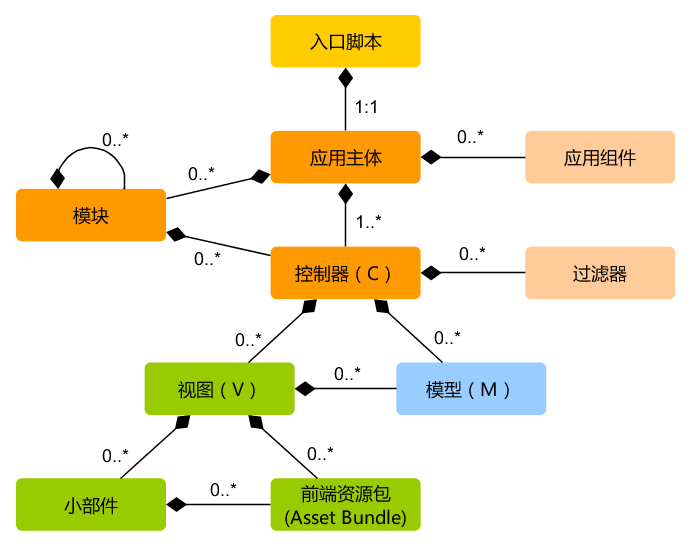

运行应用 ¶
安装 Yii 后，就有了一个可运行的 Yii 应用，
根据配置的不同，可以通过 http://hostname/basic/web/index.php 或 http://hostname/index.php 访问。
本章节将介绍应用的内建功能，如何组织代码，
以及一般情况下应用如何处理请求。
信息： 为简单起见，在整个“入门”板块都假定你已经把
basic/web设为 Web 服务器根目录并配置完毕， 你访问应用的地址会是http://hostname/index.php或类似的。 请按需调整 URL。
注意项目模板和框架完全不同，安装完之后全都归你了。你可以根据你的需要自由的添加或删除代码和 修改全部的。
功能 ¶
一个安装完的基本应用包含四页：
- 主页，当你访问
http://hostname/index.php时显示, - “About”页，
- “Contact”页， 显示一个联系表单，允许终端用户通过 Email 联系你，
- “Login”页， 显示一个登录表单，用来验证终端用户。试着用“admin/admin”登录， 你可以看到当前是登录状态，已经可以“退出登录”了。
这些页面使用同一个头部和尾部。 头部包含了一个可以在不同页面间切换的导航栏。
在浏览器底部可以看到一个工具栏。这是 Yii 提供的很有用的调试工具， 可以记录并显示大量的调试信息，例如日志信息，响应状态，数据库查询等等。
除了 web 应用程序，还有一个控制台脚本叫 yii ,它位于应用程序根目录。
它可以用于程序的后台运行和维护任务，在控制台应用程序章节
中描述。
应用结构 ¶
应用中最重要的目录和文件（假设应用根目录是 basic）：
basic/ 应用根目录
composer.json Composer 配置文件, 描述包信息
config/ 包含应用配置及其它配置
console.php 控制台应用配置信息
web.php Web 应用配置信息
commands/ 包含控制台命令类
controllers/ 包含控制器类
models/ 包含模型类
runtime/ 包含 Yii 在运行时生成的文件，例如日志和缓存文件
vendor/ 包含已经安装的 Composer 包，包括 Yii 框架自身
views/ 包含视图文件
web/ Web 应用根目录，包含 Web 入口文件
assets/ 包含 Yii 发布的资源文件（javascript 和 css）
index.php 应用入口文件
yii Yii 控制台命令执行脚本
一般来说，应用中的文件可被分为两类：在 basic/web 下的和在其它目录下的。
前者可以直接通过 HTTP 访问（例如浏览器），后者不能也不应该被直接访问。
Yii 实现了模型-视图-控制器 (MVC)设计模式，这点在上述目录结构中也得以体现。
models 目录包含了所有模型类，
views 目录包含了所有视图脚本，
controllers 目录包含了所有控制器类。
以下图表展示了一个应用的静态结构：

每个应用都有一个入口脚本 web/index.php，这是整个应用中唯一可以访问的 PHP 脚本。
入口脚本接受一个 Web 请求并创建应用实例去处理它。
应用在它的组件辅助下解析请求，
并分派请求至 MVC 元素。视图使用小部件
去创建复杂和动态的用户界面。
请求生命周期 ¶
以下图表展示了一个应用如何处理请求：